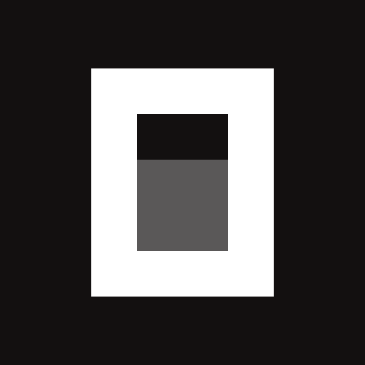
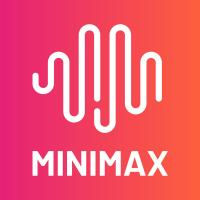
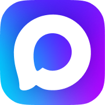
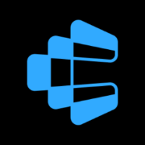

AI Цех · поток 4 · урок 1
Рабочая
машина
Сегодня собираем свою рабочую машину: понимаем, из чего она сделана, ставим запасную и даём агенту руки ко всем вашим программам.
Кто ведёт Цех

Основатель neovida.ai
Практик внедрения ИИ в бизнес, автор методики «ИИ-мышление»: думать вместе с ИИ, а не нажимать кнопки. Семь потоков «Новой реальности» и три потока Цеха. Обучает команды Минцифры Башкортостана и МФЦ.
Инженерная часть Цеха
Разработчик 8+ лет, строит продукты на ИИ, наставник по вайб-кодингу. Кодит с 15 лет: сайты, AI-агенты, Telegram-боты, CRM. Учит понимать, что сделал агент, где проверить и как довести до рабочего состояния.
Карта курса
Харнес, запасная машина OpenCode, руки агента: коннекторы, голос, видео в текст, INDEX.md
 02 · 11.11
02 · 11.11Пишем свои навыки пятью способами. Навык и есть ваш регламент
По чертежу, как команда: штурм, разведка, чертёж, сборка, проверка
OpenCode глубже: десяток моделей, переключаемся на ходу, ваш навсегда
Open Design: ваш стиль во всех агентах
Ставим Гермеса на ваш сервер: работает 24/7, пишет в Telegram
Память в Obsidian: агент помнит ваш бизнес годами
Команда агентов с должностями и регламентами

Харнесы на рынке

Наш основной. Уже стоит у всех

Запасная машина с десятком моделей. Ставим сегодня

Харнес Alibaba для своих моделей

Харнес Google для своих моделей

Редактор кода со встроенным агентом

Автономный, живёт на сервере. Урок 6

БЛОК 3 · 15 МИН
Двигатели на выбор
Американские
Китайские


Сколько стоит рабочая машина
$20ChatGPT Plus: Codex на моделях GPT
Главный принцип кодер-агента
Чат скажет «у меня нет такой возможности». Кодер-агент поставит недостающую программу, сделает задачу и запомнит, как. Один раз.
01
Сделай расшифровку этого видео
02
Нужной программы нет на компьютере
03
Объясняет каждую команду, вы отвечаете «да»
04
Расшифровал, сделал конспект
05
Пишет правило в AGENTS.md
06
Просто делает, без установки
Как подключаем


Нажали «Установить», вошли в Google. Только в Codex.
Практика 3




Даём ссылку на нашу инструкцию, агент ставит всё сам.
Практики 4 и 6


Один вход, 1 500+ сервисов, одно подключение для всех ваших агентов.
Практика 7
Библиотека коннекторов
Блок 1 · База
Блок 2 · Мессенджеры
Блок 3 · Календарь и задачи


Блок 4 · Суперсилы
Блоки библиотеки 1 и 3 · База и календарь
GmailЧто в почте ждёт моего ответа больше трёх дней? Ничего не отправляй.
GmailВсе счета и акты за октябрь таблицей: от кого, сумма, есть ли оплата.
Google ДискВсе договоры за год: с кем, сумма, срок окончания.
КалендарьГде на этой неделе окна по два часа под спокойную работу?
Блок библиотеки 2 · Мессенджеры
Вход: два кода из самого приложения Telegram. Ключи на my.telegram.org агент получает сам.
Вход по QR: WhatsApp → Настройки → Связанные устройства.
Вход по QR: MAX → Настройки → Устройства → Подключить устройство.
Подключи мне Telegram, WhatsApp и MAX по инструкции https://raw.githubusercontent.com/albertvaleev230985/neovida-messengers/main/SETUP.md
Блок библиотеки 4 · Суперсилы
1 · ставим первым
Двигатель расшифровки от Сбера: русская речь в текст на вашем компьютере.
2
Скачивает видео по ссылке: YouTube, VK Видео, Rutube и другие.

3
Достаёт звук из любого файла: видео, голосовые, записи созвонов.
4
Режет длинную запись, собирает текст с таймкодами и кладёт рядом.
5
Конспект, задачи, цитаты, посты: всё, что попросите.
Блок библиотеки 4 · Суперсилы
Кнопка в «Плагинах» Codex
Composio

Что выбрать
Кнопки в «Плагинах» хватит
Composio: одно подключение на всех
Composio или прямой коннектор
Apify: Instagram, Reels, комментарии, карты, отзывы
Блок библиотеки 4 · Суперсилы
Готовые парсеры публичных данных: посты, Reels, комментарии и хэштеги Instagram, карты, отзывы и сотни других сайтов.
Бесплатно $5 в месяц, карта не нужна. Instagram около $2,7 за 1 000 результатов.
Только публичные страницы. Входить в Instagram не нужно, закрытые профили недоступны.

БЛОК 5 · 20 МИН
Домашка · ссылка в чате
Ревизия ещё раз, ставим то, что не встало. Первые настоящие задачи через каждый коннектор.

Аккаунт на github.com и плагин GitHub в Codex: на уроке 2 он нужен всем.
Пять строк по шаблону: OpenCode, коннекторы, голос и видео, INDEX.md, что не встало.